¿Cómo agregar JavaScript a tu página?
JavaScript se aplica a tu página HTML de manera similar a CSS. Mientras que CSS usa elementos "link" para aplicar hojas de estilo externas y elementos "style" para aplicar hojas de estilo internas a HTML, JavaScript solo necesita un amigo en el mundo de HTML: el elemento {htmlelement("script")}}.
JavaScript interno
1. En primer lugar, haz una copia local de nuestro archivo de ejemplo apply-javascript.html. Guárdalo en un directorio en algún lugar accesible.
2. Abre el archivo en tu navegador web y en tu editor de texto. Verás que el HTML crea una página web simple que contiene un botón en el que se puede hacer clic.
3. A continuación, ve a tu editor de texto y agrega lo siguiente en tu head, justo antes de tu etiqueta de cierre "head".
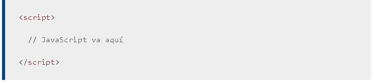
4. Ahora agregaremos algo de JavaScript dentro de nuestro elemento "script" para que la página haga algo más interesante — agrega el siguiente código justo debajo de la línea.
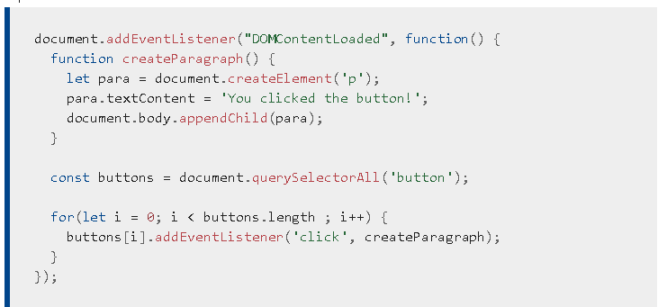
5.Guarda tu archivo y actualiza el navegador — ahora deberías ver que cuando haces clic en el botón, se genera un nuevo párrafo y se coloca debajo.
JavaScript externo
Esto funciona muy bien, pero ¿y si quisiéramos poner nuestro JavaScript en un archivo externo? Exploremos esto ahora.
1. Primero, crea un nuevo archivo en el mismo directorio que tu archivo HTML del ejemplo. Como nombre ponle script.js; asegúrate de que el nombre tenga la extensión .js, ya que así es como se reconoce como JavaScript.
2. Reemplaza tu elemento "script" actual con lo siguiente:
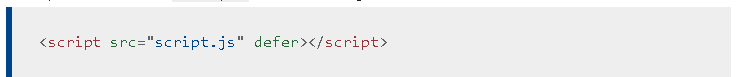
3. Dentro de script.js, agrega el siguiente script:
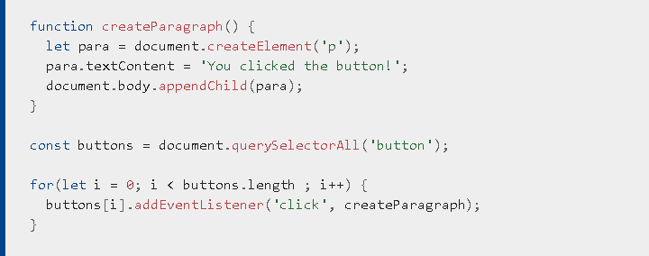
4. Guarda y actualiza tu navegador, ¡y deberías ver lo mismo! Funciona igual, pero ahora tenemos nuestro JavaScript en un archivo externo. Por lo general, esto es bueno en términos de organización de tu código y para hacerlo reutilizable en varios archivos HTML. Además, el HTML es más fácil de leer sin grandes trozos de script en él.
Controladores de JavaScript en línea
Ten en cuenta que a veces te encontrarás con fragmentos de código JavaScript real dentro de HTML. Podría verse algo similar a esto:
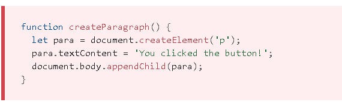
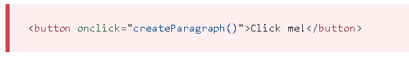
Esta demostración tiene exactamente la misma funcionalidad que en las dos secciones anteriores, excepto que el elemento "button" incluye un controlador onclick en línea para que la función se ejecute cuando se presiona el botón.
Sin embargo, no hagas esto. Es una mala práctica contaminar tu HTML con JavaScript, y es ineficiente; tendrías que incluir el atributo onclick="createParagraph()" en cada botón al que desees que se aplique JavaScript.
El uso de una construcción de JavaScript pura te permite seleccionar todos los botones usando una instrucción. El código que usamos anteriormente para cumplir este propósito se ve así:
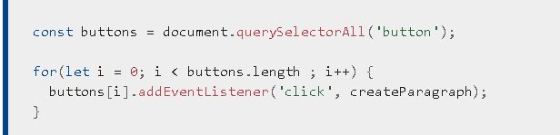
Esto puede ser un poco más largo que el atributo onclick, pero funcionará para todos los botones, sin importar cuántos haya en la página, ni cuántos se agreguen o eliminen. No es necesario cambiar el JavaScript.
Estrategia para la carga de scripts
Hay una serie de problemas relacionados con la carga de los scripts en el momento adecuado. ¡Nada es tan simple como parece! Un problema común es que todo el HTML de una página se carga en el orden en que aparece. Si estás utilizando JavaScript para manipular elementos en la página (o exactamente, el Modelo de objetos del documento (en-US)), tu código no funcionará si el JavaScript se carga y procesa antes que el HTML que estás intentando haga algo.
En los ejemplos de código anteriores, en los ejemplos internos y externos, JavaScript se carga y se ejecuta en el encabezado del documento, antes de analizar el cuerpo HTML. Esto podría causar un error, por lo que hemos utilizado algunas construcciones para solucionarlo.
En el ejemplo interno, puedes ver esta estructura alrededor del código:
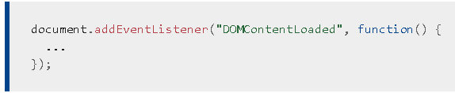
Este es un detector de eventos, que escucha el evento "DOMContentLoaded" del navegador, lo cual significa que el cuerpo HTML está completamente cargado y analizado. El JavaScript dentro de este bloque no se ejecutará hasta que se active ese evento, por lo que se evita el error (aprenderás sobre los eventos más adelante en el curso).
En el ejemplo externo, usamos una función de JavaScript más moderno para resolver el problema, el atributo defer, que le dice al navegador que continúe descargando el contenido HTML una vez que se ha alcanzado la etiqueta del elemento "script".
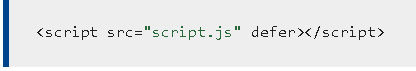
En este caso, tanto el script como el HTML se cargarán simultáneamente y el código funcionará.
Una solución pasada de moda a este problema solía ser colocar tu elemento script justo en la parte inferior del cuerpo (por ejemplo, justo antes de la etiqueta "/body", para que se cargara después de haber procesado todo el HTML. El problema con esta solución es que la carga/procesamiento del script está completamente bloqueado hasta que se haya cargado el DOM HTML. En sitios muy grandes con mucho JavaScript, esto puede causar un importante problema de rendimiento y ralentizar tu sitio.
async y defer
En realidad, hay dos modernas características que podemos usar para evitar el problema del bloqueo de script: async y defer (que vimos anteriormente). Veamos la diferencia entre estas dos.
Los scripts cargados con el atributo async (ve más abajo) descargarán el script sin bloquear el renderizado de la página y lo ejecutará tan pronto como el script se termine de descargar. No tienes garantía de que los scripts se ejecuten en un orden específico, solo que no detendrán la visualización del resto de la página. Es mejor usar async cuando los scripts de la página se ejecutan de forma independiente y no dependen de ningún otro script de la página.
Por ejemplo, si tienes los siguientes elementos script:
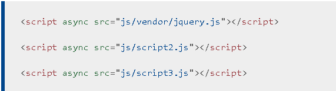
No puedes confiar en el orden en que se cargarán los scripts. jquery.js se puede cargar antes o después de script2.js y script3.js y si este es el caso, cualquier función en esos scripts dependiendo de jquery producirá un error porque jquery no se definirá en el momento en que se ejecute el script.
async se debe usar cuando tienes un montón de scripts en segundo plano para cargar, y solo deseas ponerlos en su lugar lo antes posible. Por ejemplo, tal vez tengas algunos archivos de datos del juego para cargar, que serán necesarios cuando el juego realmente comience, pero por ahora solo deseas continuar mostrando la introducción del juego, los títulos y el lobby, sin que se bloqueen al cargar el script.
Los scripts cargados con el atributo defer (ve a continuación) se ejecutarán en el orden en que aparecen en la página y los ejecutará tan pronto como se descarguen el script y el contenido:
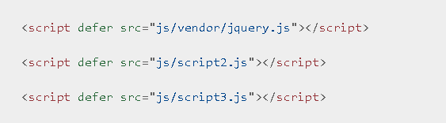
Todos los scripts con el atributo defer se cargarán en el orden en que aparecen en la página. Entonces, en el segundo ejemplo, podemos estar seguros de que jquery.js se cargará antes que script2.js y script3.js y que script2.js se cargará antes de script3.js. No se ejecutarán hasta que se haya cargado todo el contenido de la página, lo cual es útil si tus scripts dependen de que el DOM esté en su lugar (por ejemplo, modifican uno o más elementos de la página).
Para resumir:
1. async y defer indican al navegador que descargue los scripts en un hilo separado, mientras que el resto de la página (el DOM, etc.) se descarga, por lo que los scripts no bloquean la carga de la página.
2. Si tus scripts se deben ejecutar inmediatamente y no tienen ninguna dependencia, utiliza async.
3. Si tus scripts necesitan esperar a ser procesados y dependen de otros scripts y/o del DOM en su lugar, cárgalos usando defery coloca tus elementos "scrip" correspondientes en el orden que desees que el navegador los ejecute.
Comentarios
Al igual que con HTML y CSS, es posible escribir comentarios en tu código JavaScript que el navegador ignorará y que existen simplemente para proporcionar instrucciones a tus compañeros desarrolladores sobre cómo funciona el código (y a ti, si regresas a tu código después de seis meses y no puedes recordar lo que hiciste). Los comentarios son muy útiles y deberías utilizarlos con frecuencia, especialmente para aplicaciones grandes. Hay dos tipos:
1. Un comentario de una sola línea se escribe después de una doble barra inclinada (//), p. ej.
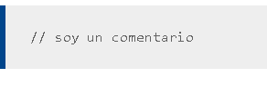
2. Se escribe un comentario de varias líneas entre las cadenas /* y */, p. ej.